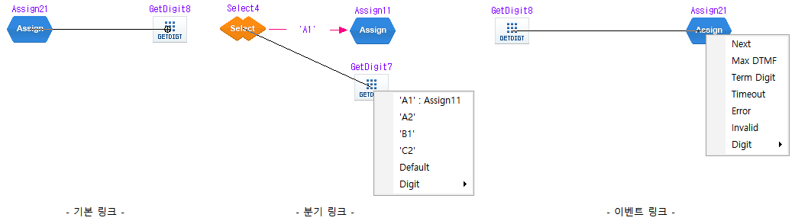
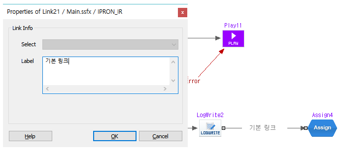
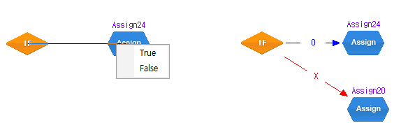
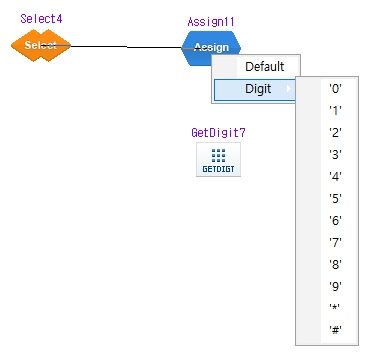
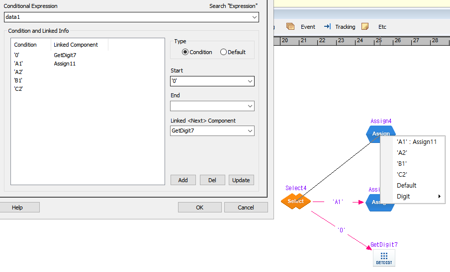
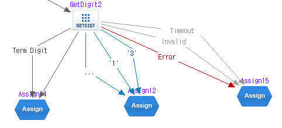
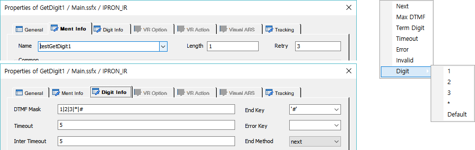
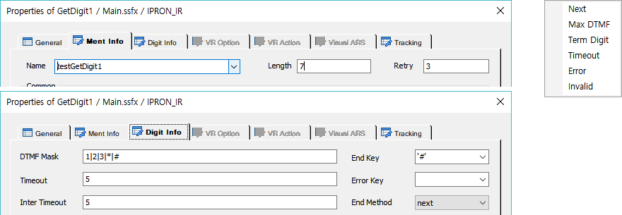
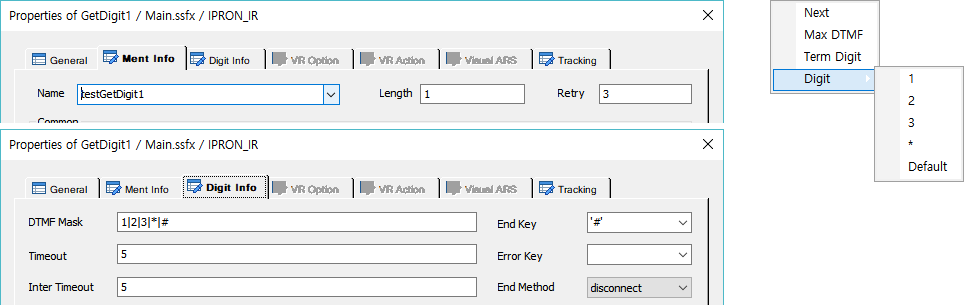
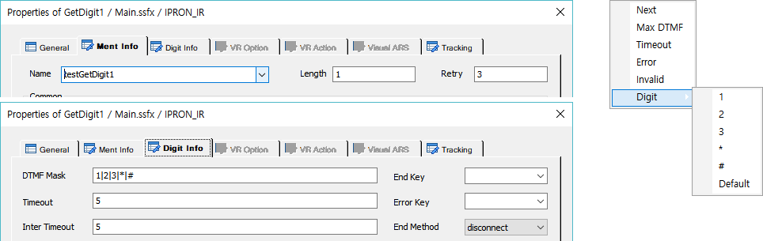

| Link | 시작 다음 이전 |
아이템과 아이템을 연결하여 시나리오 진행 플로우를 개발 한다. 링크는 기본 링크와 분기 링크, 이벤트 링크가 있는데 기본 링크는 단일 링크로 다음 아이템과 연결하는 것이고 분기 링크는 If, Select 아이템과 같이 플로우 진행을 분기하는 다중 연결 링크이며 이벤트 링크는 아이템 처리 결과에 따른 링크를 할 수 있는 다중 연결 링크 이다. 이벤트 링크는 GetDigit, Play, PacketCall, DBQuery, PacketJson 아이템에서 가능 하다. 이벤트 링크도 기본 링크를 가지고 있는데 "Next" 라는 링크 메뉴로 제공하며 다른 이벤트 링크 없이 "Next"만 연결해도 된다.(이전 버전과 동일)
링크 옵션
· 리본 메뉴 Tools > Options > Application > Link > Reselect Option 에서 링크 재 연결 설정을 할 수 있다. 링크 재 연결 설정은 아이템에 연결된 링크가 있어도 링크를 다시 하면 이전 링크는 제거되고 링크가 되는 기능 이다. 이 설정을 하지 않으면 이미 연결된 링크는 링크 선택 팝업 메뉴에 표시되지 않아 재 연결 할 수 없다.
링크 연결
· 링크 연결은 리본메뉴 Home > Canvas 의 Link 메뉴를 선택하면(또는 편집 화면 빈곳을 마우스 더블클릭) 커서가 "+ " 표시가 되는데 연결하고자 하는 아이템 위로 마우스를 가져가면 "⊕" 표시로 바뀌는데 마우스 왼 버튼을 클릭 하고 이동하면 아이템에 선이 그어 지면서 움직일 수 있는데 연결하고자 하는 목적 아이템 위로 마우스를 가져가 다시 마우스 왼 버튼을 클릭 하면 기본 링크는 바로 링크되고 분기 링크, 이벤트 링크는 링크메뉴를 팝업 하며 팝업된 메뉴를 선택하면 링크 된다. 
- 링크 모드("+" 표시)에서 아이템 선택 모드로 바꾸기 위해서는 리본메뉴 Home > Canvas 의 Select 메뉴를 선택하거나 마우스 오른 버튼을 누르면 된다.
링크 라벨
· 분기 링크, 이벤트 링크는 링크의 라벨을 수정할 수 없지만 기본 링크는 링크의 라벨을 입력/수정할 수 있다. 링크에 마우스 오른 버튼을 누르면 팝업 메뉴가 뜨는 데 Properties 메뉴를 선택하면 된다. 링크 속성 창에서 Label 에 문자열을 입력하고 OK 버튼을 누르면 링크에 라벨에 표시 된다. 
분기 링크
· if, Select 아이템에서의 링크 이다.
If : True, False 링크 메뉴를 제공하며 링크 하나 연결 후 나머지 연결은 메뉴 팝업 없이 바로 연결 된다. 
Select : 연결 조건을 값을 설정하지 않아도 Default 링크와 Digit(0 ~ 9, *, #) 링크 메뉴를 제공 한다.  - 기본 제공 링크메뉴 -
 - 조건이 설정된 Select 아이템 속성 창에 Condition 과 Linked Component 가 표시 된다. - Select4 아이템과 연결된 링크 라벨에 Condition이 표시 된다.('A1', '0') - Select4와 Assign4를 링크 하려고 하는데 팝업된 링크메뉴에 Condition과 Linked Component가 표시 된다.(링크 재연결 설정에서 Normal link reselect가 설정 되어 있을 때만 링크 연결정보가 표시되고 그렇지 않으면 링크된 항목은 팝업 메뉴에 보이지 않는다.) - 연결된 링크인 'A1' : Assign11 을 선택하면 기본 링크는 제거되고 Select4 와 Assign4가 조건 'A1'으로 재 연결 된다.(링크 재연결 설정에서 Normal link reselect 설정)
· 아이템 처리 결과 이벤트에 대한 후속 처리를 분기 링크(If, Select)를 사용하지 않고 해당 아이템에서 바로 링크하여 직관적이고 개발 편의성을 제공 한다. 현재 대상 아이템은 GetDigit, Play, PacketCall, DBQuery, PacketJson 아이템 이다.
GetDigit
· 기본 링크 "Next"와 "Max DTMF", "Term Digit", "Timeout", "Error", "Invalid", Digit(1, 2, 3, 4, 5, 6, 7, 8, 9, 0, *, #, Default) 링크를 할 수 있다. GetDigit 아이템 속성 설정에 따라 연결 할 수 있는 링크가 달라지며, 먼저 연결된 링크에 따라서도 달라 진다.
- 이벤트 링크 후에 GetDigit 아이템 속성이 바뀌어 링크 불가 조건이 된 경우에는 빌드 시 에러 처리를 한다. - Digit 링크를 먼저한 경우 Max DTMF 링크를 할 수 없는데 이것은 Digit 에 대한 링크를 원하는 것이고 또한 Max DTMF 이벤트가 Digit 입력시 발생하기 때문에(Length가 1자리 일 경우만 Digit 링크 가능) 태그 상으로 Max DTMF 이벤트 일 때 디지트를 비교하게 태그가 생성되기 때문에 Max DTMF링크를 따로 할 수 없다. - Max DTMF 링크를 한 경우에는 Digit 링크를 할 수 없는데 이벤트 처리를 Max DTMF에 대한 처리를 원하는 것이기 때문에 입력 받은 디지트에 대한 처리는 Max DTMF로 링크된 다음 아이템 이후 에서 처리 할 수 있다.
 - GetDigit Event Link Sample -
[속성 설정별 팝업 링크 메뉴]
◆ Length(1), DTMF Mask(1 자리 또는 마스크 없음), EndKey(있음), End Method(Next)

- DTMF Mask가 없는 경우는 Digit ‘0’ ~ ‘9’, ‘*’, ‘#’ 을 모두 포함한다.(EndKey로 설정된 Digit는 제외) - Digit 메뉴에서 ‘#’ 이 없는 것은 EndKey(Term Digit)로 설정되어 있기 때문이다.
◆ Length(7) , DTMF Mask(1 자리) , EndKey(있음), End Method(Next)

- Length 가 1자리 이상 이면 Digit 링크는 할 수 없다.
◆ Length(1) , DTMF Mask(1 자리) , EndKey(있음), End Method(Disconnect)

- End Method가 Disconnect면 Error, Timeout, Invalid 항목으로 링크 할 수 없다.(Error, Timeout, Invalid 이벤트 발생 시 전화가 끊어 진다.)
◆ Length(1) , DTMF Mask(1 자리) , EndKey(없음), End Method(Next)

- EndKey 가 없으면 Term Digit 링크를 할 수 없다.
Play
· 기본 링크 "Next"와 "Error" 링크를 할 수 있다.
PacketCall
· 기본 링크 "Next"와 "Timeout", "Error" 링크를 할 수 있다.
DBQuery
· 기본 링크 "Next"와 "Timeout", "Error" 링크를 할 수 있다.
PacketJson
· 기본 링크 "Next"와 "Timeout", "Error" 링크를 할 수 있다.
|
| Copyrights(C) Bridgetec.co.kr. All Rights Reserved | 시작 다음 이전 |